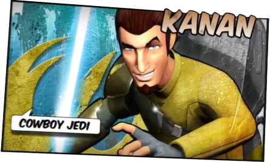
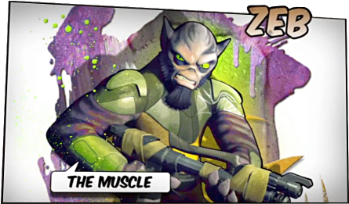

To give the Star Wars fans something to chew over while waiting for a hotly anticipated Star Wars Episode VII, Star Wars Rebels - an animated series produced by Lucasfilm, will be aired by Disney Channel worldwide, starting in October 2014. initially, 16 episodes have been ordered for the first season, with more episodes to follow in the season two, providing the show is well received.
Star Wars Rebels is set to take place in the time period between Star Wars Episode III: Revenge of the Sith and Star Wars Episode IV: A New Hope, in the epoch when the Galactic Empire is securing its grip on the galaxy by hunting down the last remnants of the Jedi Knights, as the rebellion against the oppression by the Empire is slowly beginning to grow.
Set roughly five years before Star Wars Episode IV: A New Hope, the series will follow exploits of a motley group of rebels, all of whom have been adversely affected by the Galactic Empire in one form or another, that form together a small crew aboard a freighter starship the 'Ghost’. As well as following the adventures of the 'Ghost’, the series will focus on the origins of some of the groups that will form the Rebel Alliance.
The visual style of Star Wars Rebels will be based on the original Star Wars trilogy concept art by Ralph McQuarrie and, along with the well known characters from the original trilogy (Obi-Wan Kenobi, Lando Calrissian, C-3PO, R2-D2), the series will feature some new characters:
Ezra Bridger- the street-smart hero. He has been outrunning Stormtroopers and fighting against the Empire his whole life. Ezra is a charismatic 14-year-old con artist, thief, and pickpocket who grew up on the Outer Rim Territories world of Lothal as the Empire strip mined the resources of his homeworld for Sienar's TIE fighter production. Unbeknownst to him, he is able to use the Force, and has used it to get out of certain predicaments. Stealing to survive, he has no real loyalty to anyone.
Hera Syndulla - the pilot of the crew. Her no-nonsense attitude guides the band of rebels and keeps them together. Hera is the Twi'lek female who owns and pilots the Ghost. She is incidentally also the owner of Chopper - the bad-tempered Astromech droid, who is often more of a hindrance than a help to the crew of the Ghost. Hera is the mother-figure of the crew, and brings them all together in times of crisis.
Kanan Jarrus - the Cowboy Jedi. He is the head of the crew, the one who is always willing to help out and take on the Empire. Kanan is a renegade Jedi who survived Order 66. He keeps his lightsaber under lock and key and brandishes a blaster instead to avoid the attention of the Empire. He is the leader of the crew of the Ghost and is highly eager to fight against the Empire. He is sarcastic but also distraught over the destruction of his culture and former way of life.
Sabine Wren - an explosive artist. She is a feisty tomboy who loves to blow things up with attitude. Sabine is a female Mandalorian with expert knowledge of weapons, combat, and explosives. She is incidentally also a prolific graffiti artist who adorns Imperial facilities with anti-Imperial propaganda after each attack as well as decorates her own quarters on the Ghost. Another Sabine’s pastime are frequent modifications of her armour.
Garazeb Orrelios - a well-educated alien. He is the muscle of the crew, a well-trained honour guard. Garazeb, known to his friends as Zeb, is a seasoned and intelligent Lasat enforcer who serves as the bodyguard of the Ghost crew. Zeb was trained as a warrior on his homeworld, a skill which now comes handy. He holds grudge against the Galactic Empire as the Imperial forces devastated his home planet Lasan and killed most of its population. Incidentally, he does not get along with the starship's repair droid, Chopper.

C1-10P aka Chopper - the grumpy Astromech droid. He likes to do things the way he wants and is only useful when it suits him. Chopper is Hera's cantankerous Astromech droid. Due to being crafted from spare parts since his masters could not afford anything new, he is very short-tempered and seems to not care about his owners. While always irritable and stubborn, Chopper often helps to save the day, so his partners tend to forgive him his personality quirks. Chopper's electronic language can only be understood by Hera or Sabine, and he and Ezra enjoy playing tricks on each other.
Star Wars Rebels will start to air in October 2014.